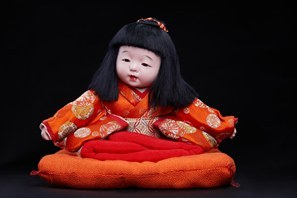

Osuwari Ningyō (Búp bê trong tư thế ngồi) là dòng búp bê mô phỏng hình ảnh trẻ nhỏ trong tư thế ngồi – một dáng vẻ tự nhiên, quen thuộc trong cuộc sống hằng ngày của các gia đình Nhật Bản. Khác với những búp bê tái hiện nhân vật lịch sử hay nghệ thuật sân khấu, Osuwari Ningyō tập trung khắc họa vẻ đẹp giản dị của tuổi thơ.
Tác phẩm thể hiện một em bé đang ngồi trên đệm zabuton truyền thống với gương mặt tròn đầy, đôi mắt trong sáng và nụ cười hồn nhiên. Bộ kimono màu đỏ được trang trí bằng các họa tiết truyền thống, tượng trưng cho niềm vui, sự may mắn và lời chúc phúc dành cho trẻ nhỏ.
Từng đường nét trên khuôn mặt, mái tóc, bàn tay và nếp gấp của kimono đều được các nghệ nhân chế tác thủ công tỉ mỉ, tạo nên vẻ sống động và chân thực. Chính sự giản dị trong tư thế và biểu cảm đã làm nổi bật sự ngây thơ, vô tư của tuổi thơ – một chủ đề được yêu thích trong nghệ thuật búp bê Nhật Bản.
Trong văn hóa Nhật Bản, những búp bê trẻ em như Osuwari Ningyō thường được trưng bày trong gia đình hoặc dùng làm quà tặng nhân dịp em bé chào đời, lễ thôi nôi hoặc các dịp đặc biệt, với mong muốn cầu chúc sức khỏe, bình an và sự trưởng thành hạnh phúc. Đồng thời, tác phẩm cũng thể hiện tình yêu thương gia đình và sự trân trọng những khoảnh khắc bình dị trong cuộc sống.
お座り人形は、日本の家庭の日常でおなじみの自然な姿である、座った幼い子どもをかたどった人形です。歴史上の人物や舞台芸術を再現する人形とは異なり、お座り人形は子ども時代の素朴な美しさを描くことに重きを置いています。
本作は、伝統的な座布団の上に座る赤ちゃんを表しており、ふっくらとした丸い顔、澄んだ瞳、無邪気な笑顔が印象的です。伝統文様で飾られた赤い着物は、喜び、幸運、そして子どもへの祝福を象徴しています。
顔、髪、手、着物のひだの一本一本まで職人が丁寧に手作りしており、生き生きとした本物らしさを生み出しています。素朴な姿勢と表情こそが、日本の人形芸術で愛されてきたテーマである、子ども時代の無垢さと天真爛漫さを際立たせています。
日本文化において、お座り人形のような子どもの人形は、家庭に飾られたり、出産祝いや初誕生、特別な機会の贈り物にされたりして、健康、平安、幸せな成長を願うものとされてきました。同時に、本作は家族の愛情と、日々の何気ない瞬間を大切にする心を表しています。